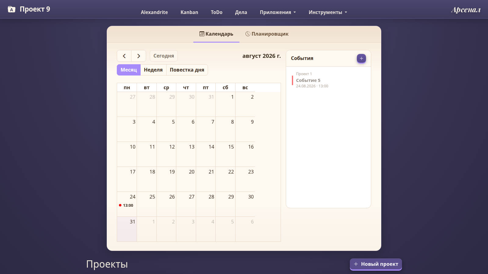

Яндекс.ДискСинхронизация и архивные бэкапы
SELF-HOSTED РАБОЧЕЕ ПРОСТРАНСТВО
Всё, чем живёт проект, — в одном месте
Документы, задачи, знания, календарь и инструменты команды больше не разбросаны по вкладкам. ARMory собирает их в понятную систему.
КДAIЕдиный контекст
для команды и AI-ассистентов

ОДИН ЦЕНТР УПРАВЛЕНИЯ ВМЕСТОразрозненных файловдесятков вкладокпотерянного контекста
ЭКОСИСТЕМА ARMORY
Все инструменты —
часть единого рабочего пространства
ARMory связывает хранение, коммуникации, автоматизацию, знания и AI в едином рабочем контексте.
TelegramНапоминания и списки ToDo
ScriptsЗапуск через at, cron и SSH
LEXoryГлоссарий и учебные карточки
AlexandriteMarkdown, файлы и кристалл знаний
S3 / MinIOОбъектное хранилище файлов
CollaboraДокументы через WOPI
MCP и LLMAI-агенты и локальные модели
Docker AppsПодключение и развёртывание сервисов
OAuth2Авторизация через внешний gateway
Ваши данныеЛокально или в выбранном облакеОткрытые интерфейсыHTTP API, MCP, WOPI и S3АвтоматизацияРасписание, SSH и уведомления
ИНТЕРФЕЙС ПРОДУКТА
Один продукт.
Несколько режимов работы.
Переключайтесь между задачами, знаниями и временем, сохраняя общий контекст.
ПОЧЕМУ ARMORY
Рабочая система,
а не ещё один сервис
ARMory связывает информацию и действия: от первой заметки до финальной стадии проекта.
Контекст не теряется
Файлы, ссылки, заметки, обсуждения и задачи живут внутри проекта.
Как устроено →Работа видна целиком
Kanban, ToDo и Гант дают три взгляда на одни задачи без дублирования.
О задачах →Система растёт с вами
Подключайте приложения, хранилища, Telegram и AI-ассистентов.
Интеграции →ВАША ИНФРАСТРУКТУРА
Рабочее пространство,
которое принадлежит вам
Инструкция по запуску
$ docker compose up -d --build